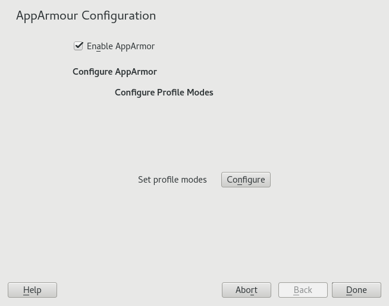

36.4. Managing AppArmor
You can change the status of AppArmor by enabling or disabling it. Enabling AppArmor protects your system from potential program exploitation. Disabling AppArmor, even if your profiles have been set up, removes protection from your system. To change the status of AppArmor, start YaST, select , and click in the main window.

To change the status of AppArmor, continue as described in the section called “Changing AppArmor status”. To change the mode of individual profiles, continue as described in the section called “Changing the mode of individual profiles”.
36.4.1. Changing AppArmor status
When you change the status of AppArmor, set it to enabled or disabled. When AppArmor is enabled, it is installed, running and enforcing the AppArmor security policies.
-
Start YaST, select , and click in the main window.
-
Enable AppArmor by checking or disable AppArmor by deselecting it.
-
Click in the window.
You always need to restart running programs to apply the profiles to them.
36.4.2. Changing the mode of individual profiles
AppArmor can apply profiles in two different modes. In complain mode, violations of AppArmor profile rules, such as the profiled program accessing
files not permitted by the profile, are detected. The violations are permitted, but
also logged. This mode is convenient for developing profiles and is used by the AppArmor
tools for generating profiles. Loading a profile in enforce mode enforces the policy defined in the profile, and reports policy violation attempts
to rsyslogd (or auditd or journalctl, depending on system configuration).
The dialog allows you to view and edit the mode of currently loaded AppArmor profiles. This feature is useful for determining the status of your system during profile development. During systemic profiling (see the section called “Systemic profiling”), you can use this tool to adjust and monitor the scope of the profiles for which you are learning behavior.
To edit an application's profile mode, proceed as follows:
-
Start YaST, select , and click in the main window.
-
In the section, select .
-
Select the profile for which to change the mode.
-
Select to set this profile to complain mode or to enforce mode.
-
Apply your settings and leave YaST with .
To change the mode of all profiles, use or .
By default, only active profiles are listed (any profile that has a matching application installed on your system). To set up a profile before installing the respective application, click and select the profile to configure from the list that appears.